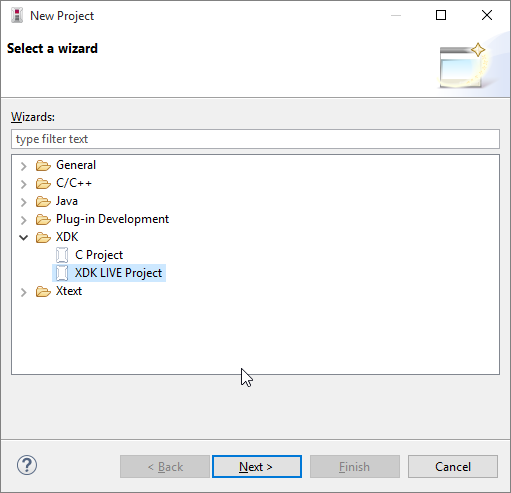

Getting Started
Prerequisites
All you need is the XDK Workbench beta release which you can find in the download section.
Create a new project
To create a new XDK LIVE project use the Eclipse New Project wizard which you’ll find in the menu under File → New → Project. Select the XDK LIVE Project wizard from the XDK category and hit Next.

Our first program
The default template prints “Hello World” every time the button one is pressed. While that’s fun, it’s not particularly useful. Let’s build something more exciting: a shock detector.
The first thing to learn is that auto-complete is very handy when writing XDK LIVE code. At any point feel free to press Ctrl+Space (Cmd+Space on a Mac) and chances are you’ll find what you were looking for.
Handling events
Let’s replace what’s currently in application.x with the code below (no worries, we’ll go through it in detail)
every 100 milliseconds {
if(accelerometer.magnitude.read() > 5000) {
// shock detected: do something useful
}
}At the core of XDK LIVE are events which enable you to react to things happening around you. There’s a wide range of events available. Go ahead, place your cursor after the every keyword and hit auto-complete to see what events are available.
The code above uses time as event. Every 100 milliseconds we check if a sensor value (the magnitude of the acceleration vector) is greater than some threshold. Notice how you didn’t have to setup a timer or the sensor that you’re using.
Using connectivity
Next we need to connect our shock detector to the rest of the world. This time we’ll use Bluetooth Low Energy (BLE). In XDK LIVE you can set up connectivities using the setup keyword, for example:
setup smartphone : BLE {
// configuration goes here
}This code creates a BLE connectivity which we name smartphone. Inside this setup block we can configure the Bluetooth connectivity, e.g. give the device a name or set the advertising interval. To find out what you can configure, use the auto-complete functionality.
setup smartphone : BLE {
deviceName = "MyDeviceName";
advertisingInterval = 2000; // in milliseconds
}Lastly we want to send out some data, in this case a boolean flag that a shock was detected. To this end setup blocks support so called variable configuration items (which sound more complicated than they really are). Have a look at the code below to see what they do:
setup smartphone : BLE {
deviceName = "MyDeviceName";
advertisingInterval = 2000; // in milliseconds
var shockDetected = bool_characteristic(UUID=0xCAFE);
}Each type of connectivity (BLE, WLAN, LWM2M, …) comes with their own variable configuration items. In this case BLE offers the bool_characteristic function to declare a BLE characteristic which transmits a boolean value. Other functions declaring different types of BLE characteristics are also available. Again, to find out what you can do here, place your cursor after the = sign past shockDetected and hit auto-complete.
Putting things together
setup smartphone : BLE {
deviceName = "MyDeviceName";
advertisingInterval = 2000; // in milliseconds
var shockDetected = bool_characteristic(UUID=0xCAFE);
}
every 100 milliseconds {
if(accelerometer.magnitude.read() > 5000) {
smartphone.shockDetected.write(true);
}
}The shockDetected signal we just created in smartphone can be used like a variable. In this case, if we want to notify users via Bluetooth, just set smartphone.shockDetected to true or false.
Flash and enjoy
Once you hit Save XDK LIVE will generate the C code which implements this program. The C code will automatically be compiled and is ready to be flashed. Click on the Flash button (much like you would with a normal XDK program) to upload the program to the connected XDK device.
This was just the beginning. Play around with the events, sensor values and connectivities offered by XDK LIVE.